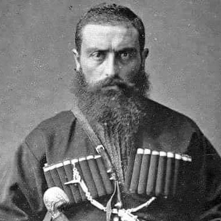
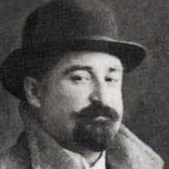
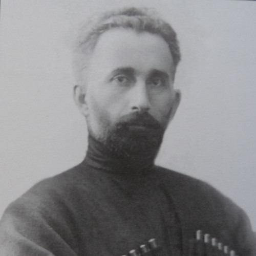

ეს გვერდი ეძღვნება იმ გამორჩეულ პიროვნებებს, რომელთა ფესვები აბაშას უკავშირდება და რომელთაც მნიშვნელოვანი წვლილი აქვთ შეტანილი საქართველოს ისტორიაში, კულტურაში, მეცნიერებასა და საზოგადოებრივ ცხოვრებაში.
მათი ბიოგრაფიები არ არის მხოლოდ ინდივიდუალური წარმატების ამბავი — ისინი ასახავენ ეროვნულ სულს, თავისუფლებისთვის ბრძოლას და კულტურული მემკვიდრეობის ღირებულებას.
აღსანიშნავია, რომ წარმოდგენილი მოღვაწეები მხოლოდ ნაწილია იმ დიდი რაოდენობის ადამიანებისა, რომლებიც აბაშიდან გამოვიდნენ და ქვეყნის ისტორიაში ღირსეულად დამკვიდრდნენ. ეს გვერდი აგრძელებს ამ სახელების შეგროვებას და პატივისცემას.
გაეცანით მათ და გადაავლეთ თვალი აბაშის ისტორიას ადამიანების თვალით.
იმოგზაურეთ აბაშის წარსულში

კონსტანტინე გამსახურდია
კონსტანტინე გამსახურდია (1891–1975) იყო ერთ-ერთი ყველაზე გამორჩეული ქართველი მწერალი, მთარგმნელი და საზოგადო მოღვაწე, რომლის ცხოვრება და შემოქმედება მჭიდროდ უკავშირდება საქართველოს კულტურულ და პოლიტიკურ ისტორიას. იგი დაიბადა ძველ აბაშაში, აზნაურის ოჯახში. განათლება მიიღო ქუთაისის გიმნაზიაში, შემდეგ კი სწავლობდა ევროპის წამყვან უნივერსიტეტებში — პეტერბურგში, კენიგსბერგში, ლაიფციგში, მიუნხენსა და ბერლინში, სადაც ფილოსოფიის დოქტორის ხარისხიც მოიპოვა.
გამსახურდია აქტიურად მონაწილეობდა საქართველოს დამოუკიდებლობისთვის ბრძოლაში. 1918 წელს იგი ბერლინში საქართველოს დემოკრატიული რესპუბლიკის საელჩოს ატაშე იყო და სამშობლოში 3000-მდე ტყვედყოფილი ქართველი ჯარისკაცი დააბრუნა, თან ჩამოიტანა მედიკამენტები და პირველი რადიოდანადგარი.
მისი ლიტერატურული მემკვიდრეობა მოიცავს რომანებს, ნოველებსა და თარგმანებს. გამორჩეულია მისი ისტორიული რომანები: „დიდოსტატის კონსტანტინეს მარჯვენა“, „დავით აღმაშენებელი“, „ვაზის ყვავილობა“, რომლებიც ეროვნული თვითშეგნების ამაღლებას ემსახურება. იგი ასევე თარგმნიდა გოეთეს, დანტესა და რემარკის ნაწარმოებებს, რითაც ქართულ ლიტერატურას ევროპული სული შემატა.
საბჭოთა რეჟიმის პირობებში არაერთხელ იყო რეპრესირებული, თუმცა არასდროს დაუკარგავს ეროვნული ღირსება. 1965 წელს მიენიჭა შოთა რუსთაველის სახელობის სახელმწიფო პრემია.

ზვიად გამსახურდია
ზვიად გამსახურდია (1939–1993) იყო ქართველი მწერალი, ფილოლოგი, დისიდენტი და საქართველოს პირველი პრეზიდენტი, რომლის მოღვაწეობა მჭიდროდ უკავშირდება ქვეყნის დამოუკიდებლობის აღდგენას და ეროვნული თვითშეგნების გაღვივებას. იგი დაიბადა თბილისში, მწერალ კონსტანტინე გამსახურდიას ოჯახში. განათლება მიიღო თბილისის სახელმწიფო უნივერსიტეტში, დასავლეთ ევროპის ენებისა და ლიტერატურის ფაკულტეტზე, სადაც სპეციალიზაცია ინგლისურ ლიტერატურაში გაიარა.
1960-იანი წლებიდან აქტიურად ჩაერთო დისიდენტურ მოძრაობაში. იყო ერთ-ერთი დამფუძნებელი საქართველოს ჰელსინკის ჯგუფისა და ადამიანის უფლებათა დაცვის აქტიური მხარდამჭერი. საბჭოთა რეჟიმის წინააღმდეგ მიმართული საქმიანობისთვის რამდენჯერმე დააპატიმრეს. 1978 წელს იგი ნობელის მშვიდობის პრემიაზე ოფიციალურად წარადგინა აშშ-ის კონგრესმა.
ზვიად გამსახურდია იყო 1989 წლის 9 აპრილის ტრაგიკული მოვლენების ერთ-ერთი ორგანიზატორი, რის შემდეგაც მისი პოლიტიკური ავტორიტეტი კიდევ უფრო გაიზარდა. 1990 წელს აირჩიეს უზენაესი საბჭოს თავმჯდომარედ, ხოლო 1991 წლის 26 მაისს — საქართველოს პირველ პრეზიდენტად. მისი ინიციატივით ჩატარდა 1991 წლის 31 მარტის რეფერენდუმი, რომელმაც საფუძველი დაუდო საქართველოს დამოუკიდებლობის აღდგენას.
სამწუხაროდ, მისი პრეზიდენტობა დასრულდა 1992 წლის იანვარში სამხედრო გადატრიალებით. იგი იძულებული გახდა დაეტოვებინა ქვეყანა, თუმცა 1993 წელს დაბრუნდა საქართველოში, სადაც იმავე წლის 31 დეკემბერს გარდაიცვალა გაურკვეველ გარემოებებში.

კონსტანტინე კაპანელი
კონსტანტინე კაპანელი (ნამდვილი გვარი — ჭანტურია, 1889–1952) იყო ქართველი ფილოსოფოსი, ლიტერატურათმცოდნე და ხელოვნების სოციოლოგი, რომლის ინტელექტუალური მემკვიდრეობა დღემდე ინარჩუნებს აქტუალობას. იგი დაიბადა სოფელ კაპანაში, ახლანდელი აბაშის მუნიციპალიტეტში. განათლება მიიღო საფრანგეთში — ნანსის, სორბონისა და გრენობლის უნივერსიტეტებში, სადაც დაიცვა დისერტაცია თემაზე „შოთა რუსთაველის მორალური და ფილოსოფიური იდეები“.
კაპანელი იყო ერთ-ერთი პირველი ქართველი მოაზროვნე, ვინც დასავლური ფილოსოფიის — განსაკუთრებით ნიცშეს, ბერგსონისა და შპენგლერის — იდეები ქართულ კულტურულ კონტექსტში გადმოიტანა. მისი ნაშრომები, როგორიცაა „სოციალური ესთეტიკის საფუძვლები: ორგანოტროპიზმი“ და „ქართულ ლიტერატურაში ტანჯვის იდეა“, ცდილობს გააერთიანოს ბიოლოგიური, ფსიქოლოგიური და სოციალური ფაქტორები ხელოვნების გააზრებაში.
1920-30-იან წლებში კაპანელი ასწავლიდა თბილისის სახელმწიფო უნივერსიტეტში, პედაგოგიურ ინსტიტუტში და კონსერვატორიაში, სადაც კითხულობდა ლექციებს დასავლეთ ევროპის ლიტერატურასა და ხელოვნების ისტორიაში. იგი იყო ჟურნალ „არიფიონის“ ერთ-ერთი ავტორი და აქტიური წევრი ქართული ინტელექტუალური წრის.
1949 წელს, კოსმოპოლიტიზმის წინააღმდეგ წამოწყებული კამპანიის დროს, კაპანელი გაათავისუფლეს ყველა სამსახურიდან და მისი ნაშრომების გამოქვეყნებაც შეწყდა. მიუხედავად ამისა, მისი იდეები — უსაზღვროების განცდა, გენიოსის როლი კულტურაში და ხელოვნების სოციალური განზომილება — კვლავ ინარჩუნებს მნიშვნელობას თანამედროვე კულტურულ დისკურსში.
სერგი მაკალათია
სერგი მაკალათია (1893–1974) იყო ქართველი ისტორიკოსი, ეთნოგრაფი და არქეოლოგი, რომლის შრომები დღემდე წარმოადგენს ფასდაუდებელ წყაროს საქართველოს სხვადასხვა კუთხის ისტორიისა და კულტურის შესასწავლად. იგი დაიბადა გურიაში, განათლება მიიღო თბილისის სასულიერო სემინარიასა და მოსკოვის უნივერსიტეტში, სადაც ისტორიის ფაკულტეტზე სწავლობდა.
მაკალათიას კვლევები მოიცავს საქართველოს თითქმის ყველა კუთხეს — ფშავიდან და ხევსურეთიდან დაწყებული, სამეგრელოთი და მესხეთ-ჯავახეთით დამთავრებული. მისი ნაშრომები, როგორიცაა „სამეგრელოს ისტორია და ეთნოგრაფია“, „მთიულეთი“, „ხევი“, „თუშეთი“ და მრავალი სხვა, გამოირჩევა დეტალურობით, ადგილობრივი ტრადიციებისადმი პატივისცემითა და მეცნიერული სიზუსტით.
იგი აქტიურად თანამშრომლობდა საქართველოს მუზეუმთან, მონაწილეობდა არქეოლოგიურ ექსპედიციებში და ასწავლიდა სხვადასხვა საგანმანათლებლო დაწესებულებაში. მაკალათია იყო ერთ-ერთი პირველი, ვინც ეთნოგრაფიული კვლევისას ადგილობრივ მოსახლეობასთან უშუალო კონტაქტს ანიჭებდა უპირატესობას, რაც მის ნაშრომებს განსაკუთრებულ სანდოობას ანიჭებს.
სერგი მაკალათიას მემკვიდრეობა არა მხოლოდ მეცნიერულია, არამედ კულტურულიც — მან შეინარჩუნა და შემოგვინახა ის უნიკალური ფენომენები, რომლებიც დღეს შესაძლოა დაკარგული ყოფილიყო. მისი შრომები კვლავაც ინსპირაციას აძლევს ახალ თაობას და წარმოადგენს ქართული იდენტობის ღრმა ანარეკლს.

სიმონ ჩიქოვანი
სიმონ ჩიქოვანი (1902–1966) იყო ქართველი პოეტი, ლიტერატურული კრიტიკოსი და საზოგადო მოღვაწე, რომლის შემოქმედება ასახავს ქართული ლიტერატურის გარდამავალ ეპოქას — სიმბოლიზმიდან ფუტურიზმამდე და იქიდან საბჭოთა იდეოლოგიურ ჩარჩოებამდე. იგი დაიბადა სოფელ ნაესაკავოში, აბაშის რაიონში. სწავლობდა ქუთაისის რეალურ სასწავლებელში და თბილისის სახელმწიფო უნივერსიტეტში, რომელიც 1922 წელს დაამთავრა.
1920-იან წლებში ჩიქოვანი გახდა ქართული ფუტურისტული მოძრაობის ერთ-ერთი ლიდერი. მან თანამოაზრეებთან ერთად ჩამოაყალიბა ლიტერატურული ჯგუფი და გამოსცა ფუტურიზმის პირველი მანიფესტი — „საქართველო — ფენიქსი“. იგი იყო ჟურნალების „H₂SO₄“, „ლიტერატურა და სხვა“ და „მემარცხენეობა“ რედაქტორი, სადაც აქტიურად უპირისპირდებოდა ძველი თაობის სიმბოლისტებს.
მისი პოეზია თავდაპირველად გამოირჩეოდა ექსპერიმენტულობითა და ენერგიულობით — ხშირად შედარებულია მაიაკოვსკის სტილთან. თუმცა 1930-იანი წლებიდან ჩიქოვანმა თავისი შემოქმედება უფრო იდეოლოგიურად მისაღები მიმართულებით შეცვალა და დაწერა პატრიოტული და ლირიკული ლექსები. ამავე პერიოდში იგი გახდა საქართველოს მწერალთა კავშირის ხელმძღვანელი და საბჭოთა ლიტერატურული პოლიტიკის ერთ-ერთი მთავარი ფიგურა.
მისი ლექსები თარგმნილია მრავალ ენაზე, ხოლო 1947 წელს მიენიჭა სსრკ სახელმწიფო პრემია. იგი დაკრძალულია მთაწმინდის პანთეონში, რაც მისი კულტურული წვლილის აღიარების სიმბოლოა.

დუტუ მეგრელი
დუტუ მეგრელი (დიმიტრი თომას ძე ხოშტარია, 1867–1938) იყო ქართველი პოეტი, მწერალი და საზოგადო მოღვაწე, რომლის შემოქმედება მჭიდროდ უკავშირდება ეროვნულ თვითშეგნებასა და ქართული იდენტობის განმტკიცებას. იგი დაიბადა სოფელ სუჯუნაში, სამეგრელოში. განათლება მიიღო ქუთაისის გიმნაზიაში, შემდეგ კი სწავლა განაგრძო ოდესის უნივერსიტეტის იურიდიულ ფაკულტეტზე.
მისი ლიტერატურული მოღვაწეობა დაიწყო 1890-იანი წლებიდან. 1891 წელს კრებულში „ცდა“ გამოქვეყნდა მისი ლექსები დუტუ მეგრელის ფსევდონიმით, ხოლო 1892 წელს გამოსცა პირველი წიგნი „სურათები ჩვენი ცხოვრებიდან“. განსაკუთრებული პოპულარობა მოიპოვა ლექსით „მე პატარა ქართველი ვარ“, რომელიც დღემდე აღიქმება როგორც პატრიოტული პოეზიის სიმბოლო.
დუტუ მეგრელი აქტიურად მონაწილეობდა საზოგადოებრივ ცხოვრებაში — იყო ქართველთა შორის წერა-კითხვის გამავრცელებელი საზოგადოების წევრი, მუშაობდა სხვადასხვა სახელმწიფო უწყებაში, მათ შორის საქართველოს დამფუძნებელი კრების საქმეთა სამმართველოში. 1919 წელს გამოაქვეყნა პოემა „პრომეთე“, ხოლო იმავე წელს გაზეთ „ერთობაში“ დაიბეჭდა მისი ლექსი „განთავისუფლდა ამირან გმირი“, რომელიც ივანე გომართელს მიეძღვნა.
საბჭოთა ხელისუფლების პირობებში მუშაობდა საფინანსო კომისარიატში, თუმცა მისი ლიტერატურული აქტივობა თანდათან შემცირდა. გარდაიცვალა თბილისში 1938 წელს. თავდაპირველად დაკრძალეს ვაკის სასაფლაოზე, ხოლო 1968 წელს გადაასვენეს დიდუბის მწერალთა და საზოგადო მოღვაწეთა პანთეონში.

აკაკი ხოშტარია
აკაკი ხოშტარია (1873–1932) იყო ქართველი ფინანსისტი, მრეწველი, ქველმოქმედი და საზოგადო მოღვაწე, რომლის საქმიანობამ მნიშვნელოვანი კვალი დატოვა საქართველოს, კავკასიისა და ირანის ეკონომიკურ და კულტურულ განვითარებაში. იგი დაიბადა სოფელ სუჯუნაში, აბაშასთან ახლოს, ტახტის აზნაურის ოჯახში. განათლება მიიღო სანკტ-პეტერბურგის სასოფლო-სამეურნეო კოლეჯში.
თავდაპირველად მუშაობდა გაგრაში, პრინც ოლდენბურგთან, სადაც დაგეგმა და განახორციელა შავი ზღვისპირეთის ბულვარებისა და ბაღების მოწყობა. მისი უშუალო ხელმძღვანელობით გაშენდა ბათუმის ზღვისპირა ბულვარი და მახინჯაურის ბოტანიკური ბაღი.
შემდეგ ხოშტარია გადაერთო ნავთობის ინდუსტრიაში — ბაქოში შეიძინა ნავთობის სარეწები და სპარსეთში მოიპოვა კონცესიები. მან დააარსა კომპანია „რეპენტო“ (რუსულ-ირანული ნავთობის საზოგადოება) და გახდა ერთ-ერთი ყველაზე გავლენიანი ფიგურა ირანის ეკონომიკაში. მისი საქმიანობა მოიცავდა რკინიგზის მშენებლობას, სავაჭრო ოპერაციებსა და მრეწველობის განვითარებას.
აკაკი ხოშტარია ასევე იყო ქველმოქმედი — მხარს უჭერდა ქართულ კულტურულ და საგანმანათლებლო პროექტებს. თუმცა საბჭოთა ხელისუფლების პირობებში მისი სახელი წლების განმავლობაში დავიწყებას მიეცა და მხოლოდ ბოლო ათწლეულებში დაიწყო მისი მემკვიდრეობის აღდგენა.

ალექსანდრე აბაშელი
ალექსანდრე აბაშელი (ნამდვილი გვარი — ჩოჩია, 1884–1954) იყო ქართველი პოეტი, პროზაიკოსი და ლიტერატურული მოღვაწე, რომლის შემოქმედება ასახავს ქართული პოეზიის გარდამავალ ეპოქას — სიმბოლიზმიდან სოციალისტურ რეალიზმამდე. იგი დაიბადა სოფელ საჩოჩიოში (დღევანდელი აბაშისპირი), ღარიბი გლეხის ოჯახში. სწავლობდა აბაშის ორკლასიან სასწავლებელში და მუშაობდა ფოსტის მოხელედ.
1906 წელს რევოლუციურ მოძრაობაში მონაწილეობის გამო გადაასახლეს სოლვიჩეგოდსკში. დაბრუნების შემდეგ, თბილისში დაიწყო ლიტერატურული მოღვაწეობა. მისი პირველი ლექსები რუსულ ენაზე გამოქვეყნდა გაზეთებში „კავკაზისა“ და „ნოვაია რეჩი“, ხოლო პირველი ქართული ლექსი „შავი აჩრდილი“ 1910 წელს დაიბეჭდა.
მისი პოეტური კრებული „მზის სიცილი“ (1913) გამოხატავს სიმბოლისტურ და რეალისტურ ტენდენციებს, სადაც მზის კულტის თემატიკა ცენტრალურ ადგილს იკავებს. საბჭოთა ეპოქაში აბაშელის პოეზიამ ახალი მიმართულება მიიღო — მან უმღერა ახალ სამშენებლო ეპოქას, გმირობასა და სოციალისტურ იდეალებს. მისი ლექსები, მოთხრობები („ქალი სარკეში“, „ატმის ყვავილი“) და კრიტიკული წერილები ასახავს დროის სულს და ლიტერატურულ ძიებებს.
აბაშელი იყო ვაჟა-ფშაველას თხზულებათა პირველი სრული კრებულის რედაქტორი და აქტიური ფიგურა ლიტერატურულ წრეებში. მიღებული აქვს შრომის წითელი დროშის ორდენი. დაკრძალულია დიდუბის პანთეონში, რაც მისი კულტურული წვლილის აღიარების სიმბოლოა.